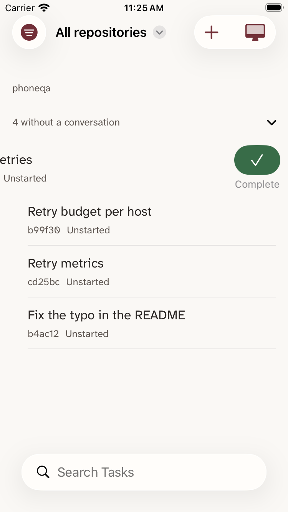
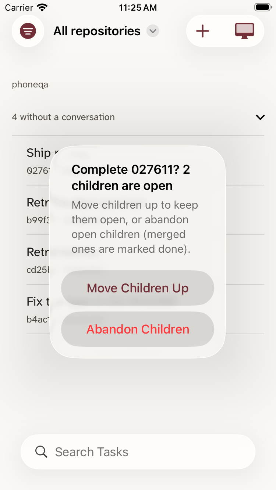
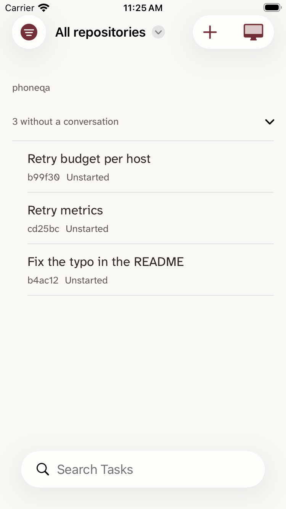
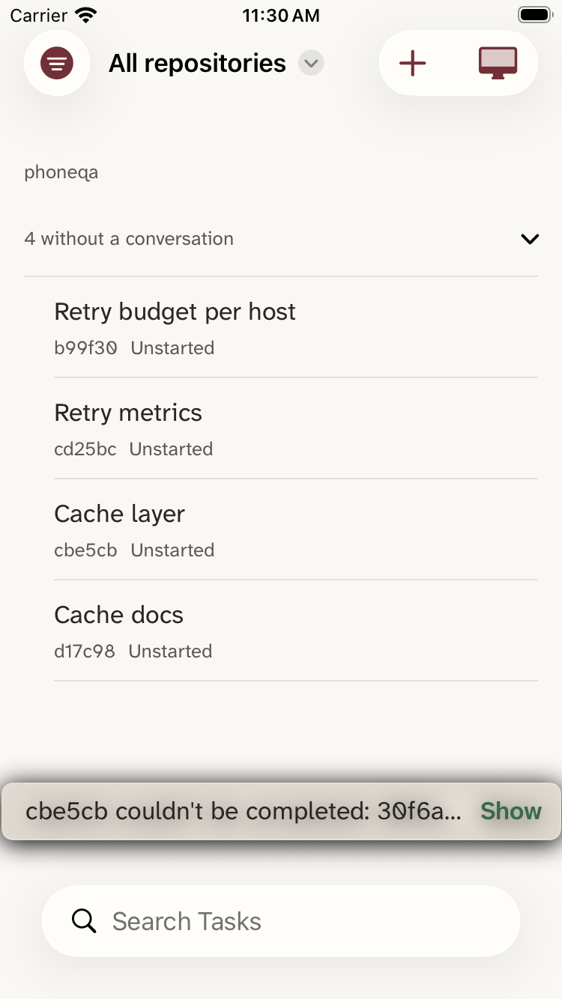
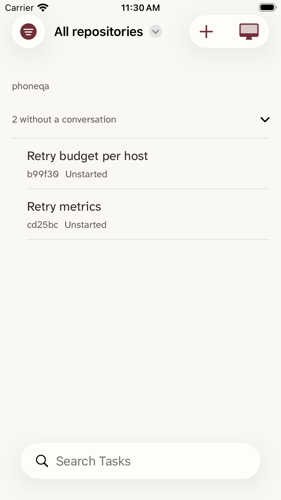

Branch lf on a private Machine (/tmp/lf-qa-ptc): isolated HOME/LF_HOME,
a bare origin behind a GitHub-shaped URL, the gh stand-in, a foreground lf server run.
The phone ran the branch iOS build in an iPhone SE Simulator paired to that private server over the Mac's tailnet.
| Scenario | Saw | |
|---|---|---|
Bare lf task complete on a parent: merged child with an open grandchild, child with open PR and a running Graph, unstarted child |
Refusal lists the tree and both commands; tasks and task_events identical before and after. Columns were ragged when titles differed. | fixed: aligned |
--children abandon with the child's Graph running | Refuses, names the Graph run, writes nothing. Said "stop it" without saying how. | fixed: names lf task interrupt <child> |
--children rehome --reason … while that child still runs | Parent done; three children move up to the grandparent; the grandchild stays under its parent; the running Graph is untouched; Completed{summary} carries the reason. | works |
--children abandon from the grandparent after stopping the Graph | Merged child done, grandchild and the rest abandoned, branch and checkout deleted. | works |
lf task reopen on an abandoned Task | Back to started, listed again. | works |
lf task run on that reopened Task | git fetch origin qa/…: couldn't find remote ref; with the fetch tolerated, the checkout refused "branch missing locally and remotely". A reopened abandoned Task could never run. | fixed: starts again from its base; test added |
lf task complete on an abandoned Task | "An abandoned Task cannot be completed" | now names lf task reopen <id> |
$ lf task complete 6297da
Error: 6297da has 3 open children; say what happens to them:
00b417 Log each retry #100 merged
18609b Retry metrics unstarted
02b7f2 Retry budget #101 open
4cdb93 Backoff docs unstarted
lf task complete 6297da --children rehome # direct children move up to 1c3e00 and stay open
lf task complete 6297da --children abandon # merged descendants done, the rest abandoned
$ lf task complete cbe5cb --children abandon
Error: 30f6ae is still running; stop with `lf task interrupt 30f6ae` or use --children rehome:
30f6ae is running: Graph run 428cb7e7-17c5-43b1-bb61-201bbe36fc05
$ lf task complete 6297da --children rehome --reason 'policy split into children'
6297da done
00b417 moved up to 1c3e00
02b7f2 moved up to 1c3e00
4cdb93 moved up to 1c3e00
$ lf task complete 1c3e00 --children abandon
1c3e00 done
00b417 done: #100 merged
18609b abandoned: no merged PR
02b7f2 abandoned: #101 open
4cdb93 abandoned: no merged PR
task.completeOver the private socket as a desktop client. children: "rehome" answered with the child's outcome: "rehomed".
The refusal for children: null came back as outcome_unknown with "; inspect the affected work before retrying" appended, and Swift adds
"It may have happened; refresh before retrying" to that code, though nothing was written. Fixed: completion refusals are
OpsError::Refused carrying conflict; Error::written reads it (unit test added). Missing children → invalid.





A leaf swipe completed at once with no dialog.
Not reached mounted.
Complete Task… sits only in SwiftUI menus (Task page, row and dashboard context menus), which the QA hook
cannot open, and it is not in the main menu. Covered instead: the served write as a desktop client (above) and
TaskCompleteConfirmationTests on this branch. The dialog's two button layouts have not been seen on screen.
lf task interrupt does not stop a running cmd: step. It says "stopped Graph …" and records the interrupt, but the step process keeps running and the abandon refusal stays. Untouched by this branch; the refusal now points at interrupt, which works for agent steps.no_action, while lf task run is what works.#101 open, not running).cargo test -p loopflow --test integration -- a_merged_parent_stays_open a_reopened_abandoned_task checkout_restores_exact pass (here) cargo test -p loopflow-execution --lib -- ops::task:: engine::tests pass (here) cargo clippy -p loopflow-execution -p loopflow --all-targets -- -D warnings clean (here) Swift TaskCompleteConfirmationTests, TaskFeedTests, ServerProtocolTests; full Rust suites CI at gate